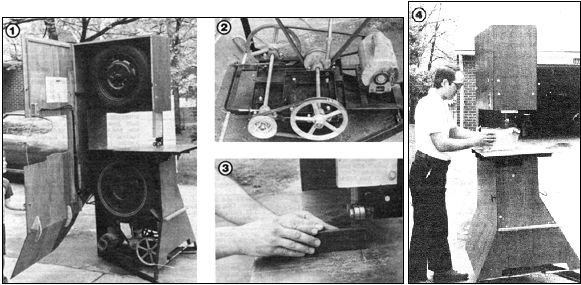

[1]The band saw's plywood housing swings away to allow servicing of the components inside. [2] In this photo of the variable- speed drive mechanism, the motor belt is routed to the jack shaft for low speed metal cutting. [3] Ad just able bearings position and support the blade. [4] This homemade band saw is able to handle material of much greater thickness than can most commercial models.